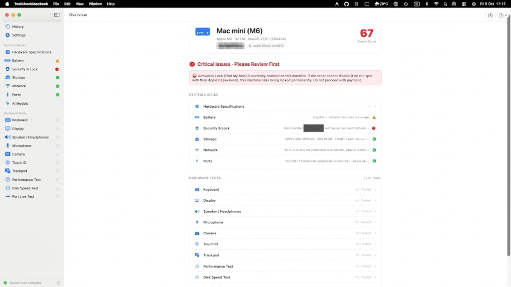

Phần Mềm Test MacBook Cũ & Thẩm Định Phần Cứng Chuẩn Startup
Công cụ chẩn đoán chuyên sâu dành cho người mua MacBook cũ, chuỗi cửa hàng bán lẻ và thợ sửa chữa. Tự động đọc dữ liệu từ nhân IOKit, phát hiện máy dính MDM, iCloud ẩn, kiểm tra pin, SSD SMART và xuất báo cáo thẩm định chuyên nghiệp — hoạt động 100% offline, không thu thập dữ liệu.

Quy Trình Kiểm Tra & Thẩm Định Chuẩn 5 Bước
Quy trình kiểm tra khép kín như kỹ thuật viên Apple Care, giúp bạn tránh 100% rủi ro khi mua máy đã qua sử dụng:
Tải Về & Khởi Chạy Nhanh
Tải file ToolCheckMacBook-v1.2.0.dmg (hoặc copy từ USB). Kéo vào thư mục Applications. Khi mở lần đầu, nhấp Chuột phải › Open để vượt qua kiểm tra Gatekeeper của macOS.
Xem Điểm Số & Cảnh Báo Đỏ
Ứng dụng tự động quét ngay khi mở. Nhìn ngay vùng Critical Issues (Cảnh báo đỏ): kiểm tra máy có dính hồ sơ MDM công ty không, Activation Lock có đang bật ngầm không, số Serial IOKit có khớp với hệ thống không.
Thực Hiện 10 Bài Test Vật Lý
Chuyển qua mục Hardware Tests: bấm phím trên bàn phím ảo toàn màn hình để tìm phím liệt, quét màn hình đổi màu để soi điểm chết/ám ố, kiểm tra loa stereo trái/phải, mic, webcam, Touch ID và Trackpad Force Touch.
Đo Tốc Độ SSD & Ép Tải CPU
Chạy bài Disk Speed Test để kiểm tra tốc độ đọc/ghi SSD thực tế bỏ qua bộ đệm cache. Chạy Performance Test để ép tải CPU đa nhân, kiểm tra quạt tản nhiệt và xem máy có bị quá nhiệt (thermal throttling) không.
Xuất Báo Cáo & Chốt Giá
Bấm nút Export Report để lưu biên bản kiểm tra định dạng PDF hoặc ảnh PNG dài. Dùng các thông số hao mòn pin/SSD làm cơ sở đàm phán giảm giá hoặc lưu trữ bằng chứng tình trạng máy lúc mua.
Thang Điểm Thẩm Định & Hướng Dẫn Ra Quyết Định
ToolCheckMacBook tự động chấm điểm tổng thể (Score 0-100) theo thuật toán độc quyền:
Máy Xuất Sắc • An Tâm Mua
Máy nguyên bản (Zin), không dính MDM hay iCloud, pin dưới 300 chu kỳ sạc, SSD đạt chuẩn SMART Verified, mọi bài test tương tác đều vượt qua hoàn hảo.
Hao Mòn Bình Thường • Cần Ép Giá
Máy đã qua sử dụng từ 2-4 năm. Pin hoặc SSD có mức độ chai tự nhiên (pin trên 500 chu kỳ, dung lượng còn 70-80%). Nên thương lượng giảm thêm giá tương ứng chi phí thay pin.
Cực Kỳ Nguy Hiểm • Tuyệt Đối Không Mua
Máy dính quản lý từ xa MDM, dính khóa iCloud ẩn, số serial có dấu hiệu can thiệp bất thường, hoặc ổ SSD báo lỗi SMART Failing có nguy cơ mất dữ liệu đột ngột.
⚠️ 4 Cạm Bẫy Lớn Nhất Khi Mua MacBook Đã Qua Sử Dụng
Hầu hết người mua chỉ kiểm tra ngoại hình và xem "Giới thiệu về máy Mac này", nhưng giao diện đó rất dễ bị can thiệp. ToolCheckMacBook giúp bạn phát hiện ngay:
1. Máy dính MDM (Quản lý từ xa)
Máy thuộc sở hữu công ty/doanh nghiệp. Có thể bị khóa từ xa bất cứ lúc nào hoặc không thể nâng cấp macOS.
2. iCloud Ẩn & Activation Lock
Khóa kích hoạt Find My vẫn bật ngầm. Khi khôi phục cài đặt gốc, máy sẽ biến thành "cục gạch".
3. Làm giả số Serial & Cấu hình
Được can thiệp để hiển thị năm sản xuất hoặc dung lượng ảo. ToolCheckMacBook đọc trực tiếp từ nhân kernel để đối chiếu.
4. Pin đã bị reset chu kỳ sạc
Pin chai nặng nhưng được can thiệp báo 99% sức khỏe. Công cụ đọc trực tiếp dung lượng thiết kế và dung lượng tối đa thực tế.
Kiểm Tra Hệ Thống Tự Động Chuyên Sâu
Ứng dụng giao tiếp trực tiếp với các framework tầng thấp của Apple: IOKit, CoreWLAN, system_profiler và Metal.
Đối chiếu chống giả mạo Serial
Đọc số serial phần cứng từ tầng nhân IOKit và đối chiếu chéo độc lập với system_profiler để phát hiện ngay các bản ROM giả mạo số serial.
Kiểm tra Pin thực tế (IORegistry)
Đọc số lần sạc (Cycle Count), dung lượng thiết kế gốc (Design Capacity), dung lượng thực tế tối đa hiện tại (Max Capacity), nhiệt độ pin và công suất sạc.
Phát hiện MDM & Khóa iCloud
Tự động quét cấu hình Apple DEP / MDM của doanh nghiệp, kiểm tra tài khoản Apple ID đang đăng nhập và tình trạng kích hoạt của Find My Mac.
Sức khỏe ổ cứng SSD NVMe SMART
Kiểm tra trạng thái SMART (Verified hay Failing), tổng dung lượng đã ghi (TBW), tổng số giờ chạy liên tục, số lần tắt nguồn đột ngột và phần trăm khối nhớ dự phòng.
Đo tốc độ SSD & Stress test CPU
Đo tốc độ đọc/ghi SSD thực tế bỏ qua bộ nhớ đệm cache (`F_NOCACHE`), kết hợp bài kiểm tra ép tải đa nhân CPU và theo dõi trạng thái nghẽn nhiệt (thermal throttling).
Xuất Báo Cáo Thẩm Định (PNG/PDF)
Chỉ với 1 click, bạn có thể xuất toàn bộ biên bản kiểm tra máy định dạng ảnh PNG sắc nét hoặc PDF chuyên nghiệp để gửi cho người bán/khách hàng.
Bộ Chẩn Đoán Phần Cứng Tương Tác 10 Món
Quy trình kiểm tra từng bước bằng thao tác thực tế trên các linh kiện:
Câu Hỏi Thường Gặp (FAQ)
Những giải đáp phổ biến khi sử dụng phần mềm kiểm tra MacBook:
ToolCheckMacBook có miễn phí không?
Hoàn toàn miễn phí 100% và mở mã nguồn theo giấy phép MIT. Bạn có thể tự do tải về sử dụng cá nhân hoặc dùng cho cửa hàng của mình.
Ứng dụng có cần kết nối Internet không?
Không. Ứng dụng chạy hoàn toàn offline (ngoại tuyến). Bạn có thể mang USB chứa app đi test máy ở bất cứ đâu mà không cần kết nối Wi-Fi.
Ứng dụng hỗ trợ những dòng máy Mac nào?
Hỗ trợ tất cả dòng máy Mac chạy macOS 14.0 trở lên, bao gồm MacBook Air, MacBook Pro, Mac mini, iMac, Mac Studio và Mac Pro chạy cả chip Apple Silicon (M1, M2, M3, M4, M5, M6) lẫn Intel.
Tại sao macOS báo "Nhà phát triển chưa được xác minh"?
Do đây là phần mềm mã nguồn mở ad-hoc miễn phí, macOS Gatekeeper sẽ hiện cảnh báo an toàn. Bạn chỉ cần Click chuột phải vào app › chọn Open là có thể sử dụng bình thường vĩnh viễn.